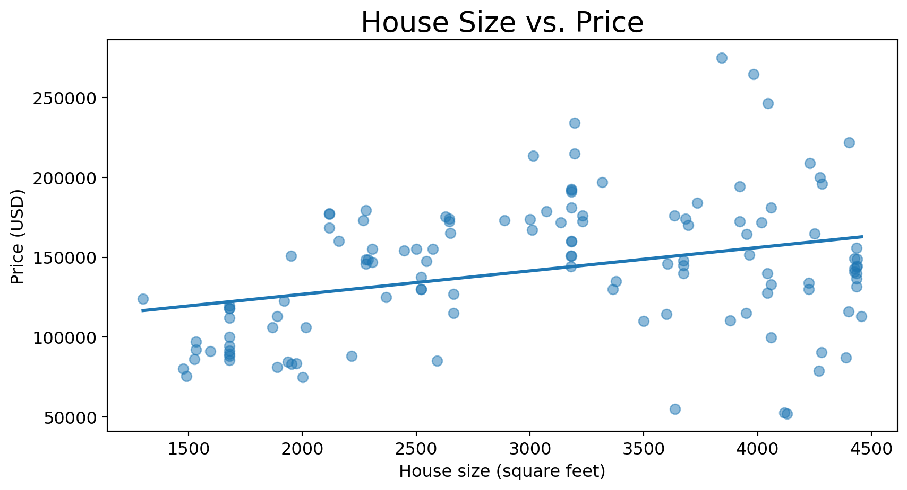
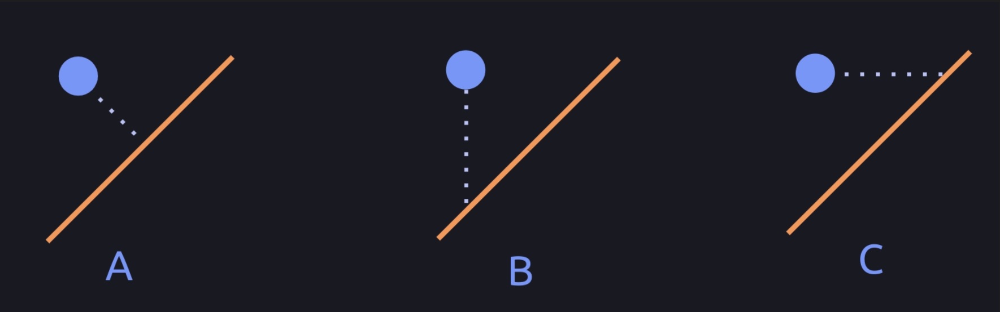
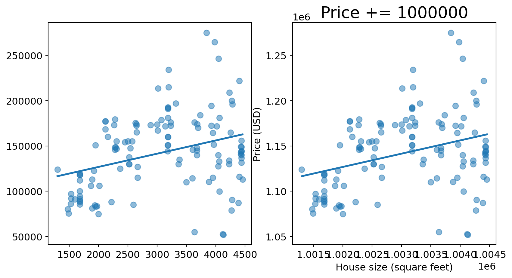
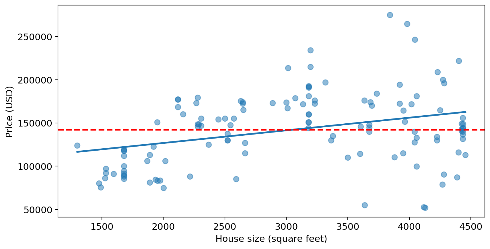
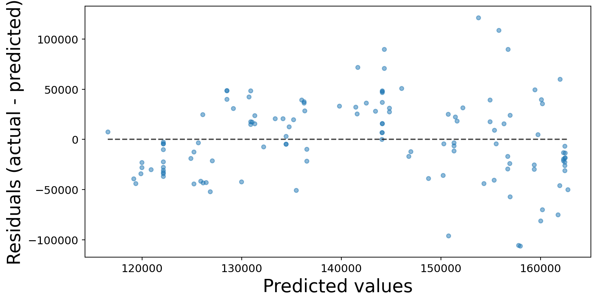
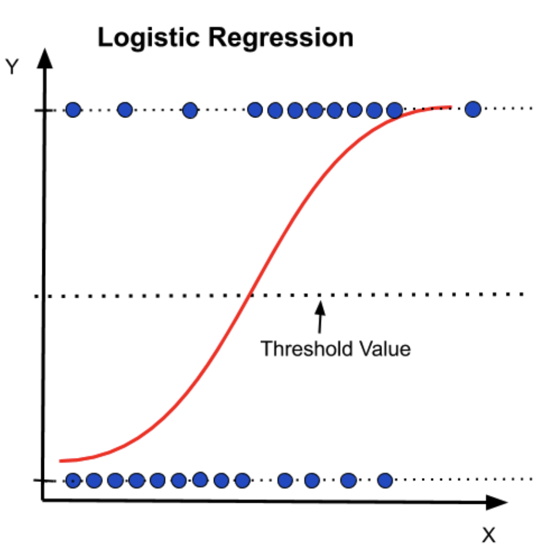

| Id | MSSubClass | MSZoning | LotFrontage | LotArea | Street | Alley | LotShape | LandContour | Utilities | LotConfig | LandSlope | Neighborhood | Condition1 | Condition2 | BldgType | HouseStyle | OverallQual | OverallCond | YearBuilt | YearRemodAdd | RoofStyle | RoofMatl | Exterior1st | Exterior2nd | MasVnrType | MasVnrArea | ExterQual | ExterCond | Foundation | BsmtQual | BsmtCond | BsmtExposure | BsmtFinType1 | BsmtFinSF1 | BsmtFinType2 | BsmtFinSF2 | BsmtUnfSF | TotalBsmtSF | Heating | HeatingQC | CentralAir | Electrical | 1stFlrSF | 2ndFlrSF | LowQualFinSF | GrLivArea | BsmtFullBath | BsmtHalfBath | FullBath | HalfBath | BedroomAbvGr | KitchenAbvGr | KitchenQual | TotRmsAbvGrd | Functional | Fireplaces | FireplaceQu | GarageType | GarageYrBlt | GarageFinish | GarageCars | GarageArea | GarageQual | GarageCond | PavedDrive | WoodDeckSF | OpenPorchSF | EnclosedPorch | 3SsnPorch | ScreenPorch | PoolArea | Fence | MiscFeature | MiscVal | MoSold | YrSold | SaleType | SaleCondition | SalePrice | |
|---|---|---|---|---|---|---|---|---|---|---|---|---|---|---|---|---|---|---|---|---|---|---|---|---|---|---|---|---|---|---|---|---|---|---|---|---|---|---|---|---|---|---|---|---|---|---|---|---|---|---|---|---|---|---|---|---|---|---|---|---|---|---|---|---|---|---|---|---|---|---|---|---|---|---|---|---|---|---|---|---|
|
Loading ITables v2.2.3 from the internet...
(need help?) |
Lecture 2: Regression metrics
Vincent Liu
Classification metrics review
- Accuracy, Precision and recall, F1
Decision threshold
- Evaluate a model in general over multiple thresholds.
- Pick a threshold to address the business problem.
- PR and ROC curve.
Regression metrics
Kaggle House Prices dataset
How can we measure how well this line fits the data?

- Distance to the regression line.
Which distance to the line should we measure? Why?

- B because we’re interesting in the error in prediction.
How to aggregate the error distances?
Root mean squared error (RMSE)
\[ RMSE = \sqrt{MSE} = \sqrt{\frac{1}{n} \sum_{i=1}^{n} ({y_i - \hat{y}_i})^2} \]
- Error of $40k dollars is more interpretable than 1 billion square dollars.
Mean absolute error (MAE)
\[ MAE = \frac{1}{n} \sum_{i=1}^{n} |{y_i - \hat{y}_i}| \]
- Interpretable.
- More robust to outliers.
How will these errors change with shift?

- They will all remain the same.
- However, the right model would be considered better.
Mean absolute percentage error (MAPE)
\[ MAPE = \frac{1}{n} \sum_{i=1}^{n} \frac{|{y_i - \hat{y}_i}|}{y_i} \]

\(\small R^2(y, \hat{y}) = 1 - \frac{\sum_{i=1}^n (y_i - \hat{y_i})^2}{\sum_{i=1}^n (y_i - \bar{y})^2}\)
- The proportion of variation in \(Y\) that can be explained using \(X\).

Inspect the error of the model
- Residual analysis: plot the error vs. the predicted value or features.

Exercise 1: Which model would you choose?
| Metric | Model A | Model B |
|---|---|---|
| Mean Absolute Error (MAE) | 5.2 | 6.1 |
| Mean Squared Error (MSE) | 43.3 | 39.8 |
| Root Mean Squared Error (RMSE) | 6.6 | 6.3 |
| \(R^2\) | 0.78 | 0.81 |
Exercise 2: Choosing Metrics
- Predicting sales in dollars, where large errors are particularly costly.
- Predicting stock prices, where both under- and over-predictions are equally important.
- Forecasting demand as a percentage of historical values, where relative errors are more critical than absolute errors.
Ridge regression
High level idea
Why Use Ridge Regression?
- Addresses multicollinearity.
- Bias and variance trade-off (lecture 6).
Brier score - MSE for classification

- Logistic regression gives probability, then we use a hard threshold to make decisions.
How wrong a single classification is?
- \[ \text{Brier Score} = \frac{1}{n} \sum_{i=1}^{n} ({\hat p_i - y_i})^2 \]
- \[0 \leq \text{Brier Score} \leq 1\]
Weather example
| Day | Predicted Probability | Actual Outcome |
|---|---|---|
| Day 1 | 0.8 | 1 |
| Day 2 | 0.55 | 0 |
| Day 3 | 0.6 | 1 |
| Day 4 | 0.1 | 0 |
What did we learn today?
- \(R^2\), MSE, RMSE, MAE, MAPE.
- Ridge regression.
- Brier score.
DSCI 573